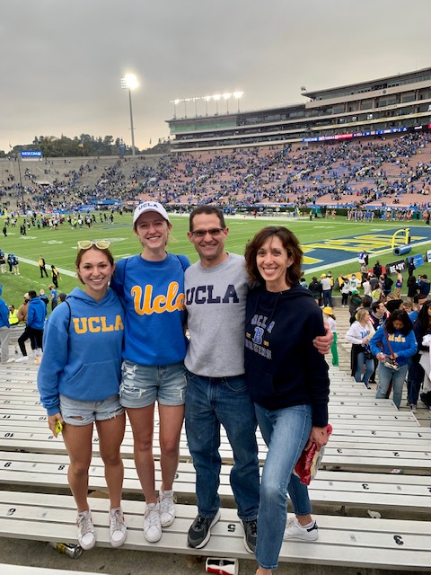
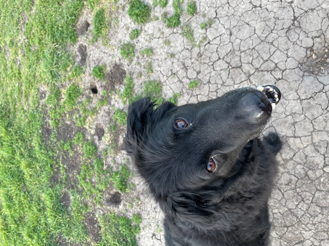

Some fun facts about me:
I like to run cross country and track and field. I used to play soccer and lacrosse but joined the cross country team in 6th grade and loved running ever since. My whole family likes to run so I also have been running 5ks like Turkey Trots and other fun races for my whole life.
I am a senior in high school and I am going to be attending UC Berkeley in the fall and I am going to run there. I like school and my favorite subjects are science and math. I took AP Art History senior year and that is my favorite class.
 I have an older sister, named Maggie, and a dog, named Osa. Maggie is a sophomore at UCLA and my best friend. Osa is a newfoundland, bordercollie, lab and cattle dog mix: which means he has a lot of energy.

I like to travel, hike and be outdoors. It is my goal to go to every (or almost every) country in my life and I really want to visit Iceland to see the Northern Lights. My favorite food is pasta and my favorite color is blue.